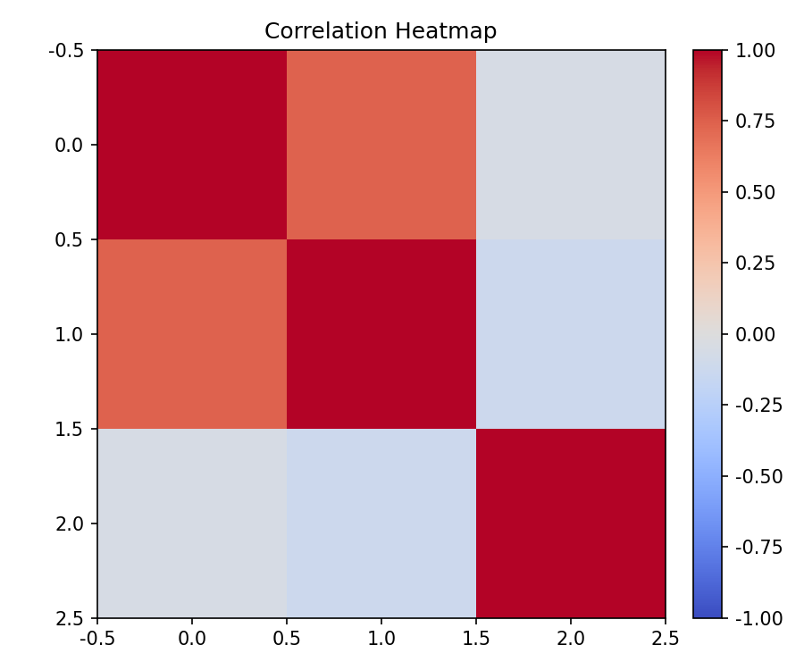
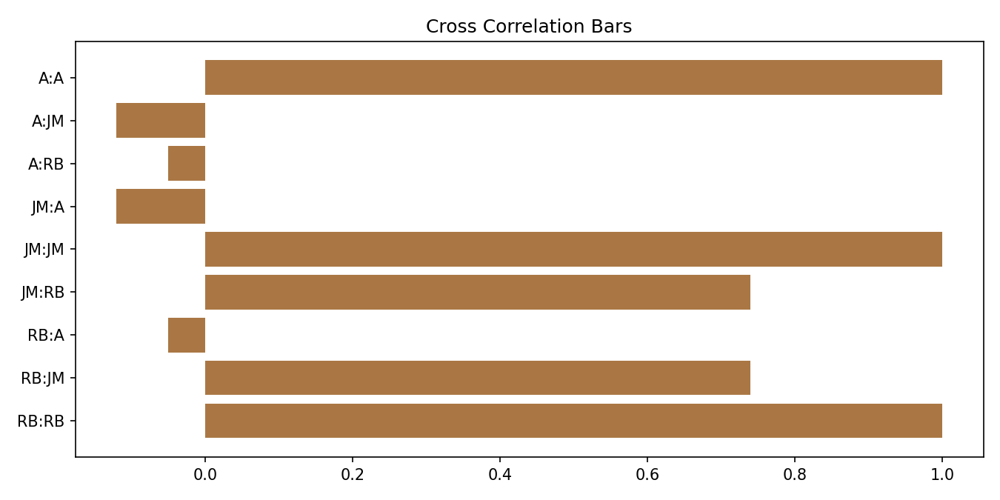
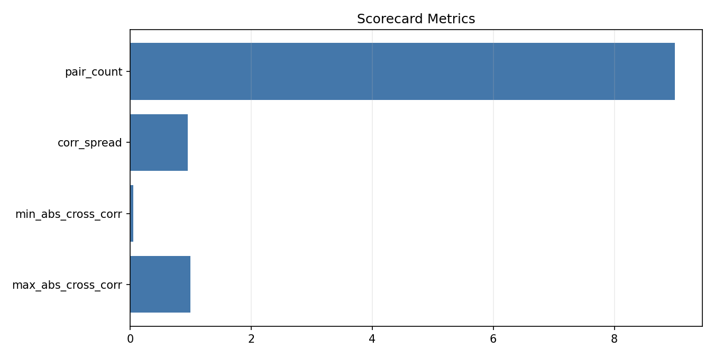

相关性断裂研究 Agent
Correlation Break Research Agent
核心结论
本次运行给出的状态是 correlation-break-watch。这不是自动买卖建议，而是帮助研究者判断是否需要继续观察、升级复盘或寻找反证。
这个 Agent 适合你解决什么问题
资产相关性是否出现结构变化，组合分散是否可能失效？
核心观察焦点：期货主力合约相关矩阵、最大/最小相关差、跨品种相关扩散。
关键证据图



证据拆解
| 指标 | 值 | 说明 |
|---|---|---|
| state | correlation-break-watch | 用于复核本次判断的核心字段 |
| max_abs_cross_corr | 1.0000 | 用于复核本次判断的核心字段 |
| min_abs_cross_corr | 0.0500 | 用于复核本次判断的核心字段 |
| corr_spread | 0.9500 | 用于复核本次判断的核心字段 |
| pair_count | 9 | 用于复核本次判断的核心字段 |
| confidence | medium | 用于复核本次判断的核心字段 |
情景推演
当前状态可以作为基准观察；如果核心指标继续同向强化，进入升级观察；如果核心证据反向，降级当前解释权重；如果数据覆盖不足，先停止解释并等待补数。
观察清单
- 先看核心状态是否延续。
- 再看是否出现反证条件。
- 最后确认数据覆盖和字段完整性。
下一步观察
下一次 Pandadata 数据刷新后重新运行脚本，重点比较 scorecard、decision matrix 和 monitoring checklist 的变化。
数据来源与可信度
| 表 | 行数 | 字段 |
|---|---|---|
| future_dominant_corr | 9 | correlation, pair |
查看运行信息
生成时间：2026-06-15 10:19:57。登录耗时：8.38s。
- future_dominant_corr: 9 rows, 5.57s
限制与假设：样本窗口较短，适合盯盘和研究复盘，不适合单独形成交易结论。